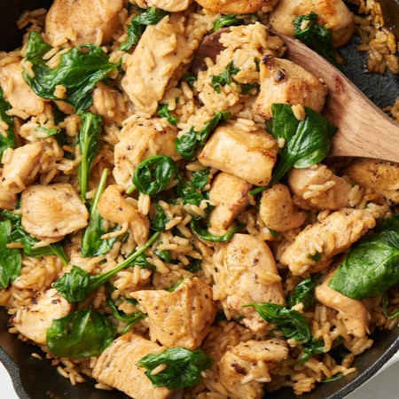

One-Pot Creamy Garlic Chicken and Rice

Description
Nothing beats this one-pot creamy chicken and rice recipe when it comes to convenience or comfort. If you could have a no-hassle garlicky, delicious chicken and rice dish on the table in less than 30 minutes with only one pot to clean, why wouldn’t you? Also, we can pretty much guarantee you won’t have any leftovers to put away, either. So, there’s that too.
Ingredients
- 1 lb chicken breast, cut into chunks
- 1 teaspoon garlic powder
- 1/2 teaspoon salt
- 1/2 teaspoon pepper
- 1 tablespoon olive oil
- 3 cloves garlic, minced
- 3/4 cup long grain white rice
- 2 1/2 cups chicken broth
- 2 cups baby spinach
- 2 tablespoons heavy cream
Steps
-
Toss the chicken breast with garlic powder, salt, and pepper. Heat olive oil in a 10-inch skillet over medium heat. Add chicken breast and cook until browned, stirring often, about 3 minutes. Add garlic to skillet and cook for 30 seconds more.
-
Stir in rice and chicken broth. Bring to a boil, reduce to a simmer, and cover. Cook for 20 minutes, stirring occasionally.
-
Remove pan from heat and place baby spinach on top of the rice. Cover and let sit for 5 minutes.
-
Remove lid and stir well. Stir in cream and serve.
Go back
Recipe source